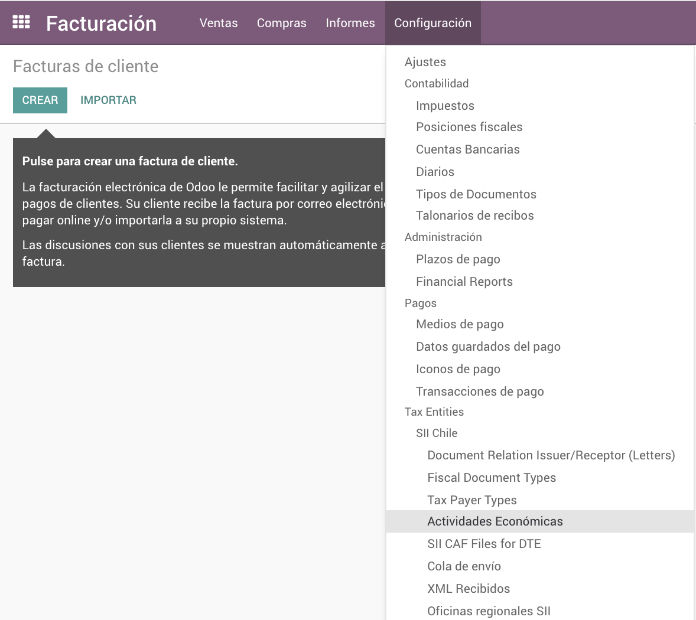
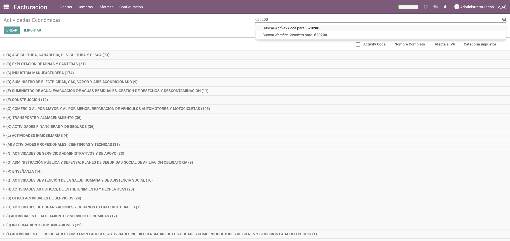

Odoo Localización para Chile
Actividades Económicas Según nomenclador del SII y Selector de Giros.
por Blanco Martín & Asociados
A partir del 1° de Noviembre de 2018, el SII ha implementado nuevos códigos de actividad económica, en el marco del
proceso de recodificación de actividades que realizan el SII y el INE, con el objetivo de homologar esta clasificación
con la que usa la ONU a nivel internacional (CIIU4).
La actividad económica es mandatoria para su compañ´a (emisor de la factura) ya que si los códigos de actividad económica est´n
ingresados incorrectamente, su factura electrónica puede ser rechazada por el SII. Esta nueva versión
11.0.2.0.0, posee la nueva codificación.
NUEVA VERSION (12.0 / 11.0 / 10.0 / 8.0 / Enterprise y Community)
Se puede buscar por código de actividad económica o por nombre:


Si Ud es usuario de facturación electrónica, antes de emitir facturas a partir de esa fecha, deberá actualizar
los códigos de actividad económica acorde con los nuevos códigos que el SII le ha asignado.
En esta actualización, hemos incorporado los nuevos códigos de actividad económica de manera tal que los mismos puedan
ser asignados a su empresa.
En nuestra codificación, conservamos los códigos antiguos con el fin de mantener compatibilidad con implementaciones antiguas,
sin embargo recomendamos revisar esta codificación para que Ud. se cerciore que los códigos de su empresa sean iguales a
los del SII, ya que en caso de diferencias sus facturas serán rechazadas por códigos de actividad mal asignados mal asignados.
Permite visualizar los códigos de actividad económica durante la asignación de las mismas a compañías y a clientes / proveedores
Glosa descriptiva de la actividad econoacute;mica de contribuyente Cliente o Proveedor
el cual deberá ser indicado por el contribuyente
Cómo se usa:
Una vez instalado, en la vista de partners, al editar podrá seleccionar y guardar, todas las actividades económicas de la empresa, en una vista de etiquetas.
Esto, a su vez, le permitirá seleccionar al momento de crear una nueva factura, alguno de los giros registrados para ese cliente.